RTESArenaAssist — приложение, которое во время игры в The Elder Scrolls: Arena показывает дополнительную информацию: перевод, карту, журнал, лог, управление сохранениями, снимки экрана, словарь и руководство.
Изображения сделаны в Assist на вашем языке отображения, с темой «Тёмная», с настройками по умолчанию и без подключения. При подключении содержимое меняется в зависимости от текущего экрана Arena и состояния игры.
Обычно работают так: запускают Arena, подключают Assist, кнопкой ⊞ включают режим расположения и играют. В режиме расположения игровой экран DOSBox и перевод, карта и вкладки Assist размещаются рядом на одном экране, так что переключаться по Alt+Tab не нужно.
Подробное описание параметров см. на странице «Настройки» этого руководства.
В публичную версию не входят оригинальные данные Arena. При первом запуске файлы для перевода создаются из папки Arena, которая есть у вас.
Сначала выберите язык отображения Assist. Выбранный язык сразу применяется на этом экране.
| Элемент | Описание |
|---|---|
| Список языков | Выбирает язык интерфейса Assist. На этом экране можно выбрать только японский, English и Español. Остальные языки выбираются после запуска в окне настроек, на вкладке «Общие», в поле «Язык». |
Next | Кнопка «Далее»: переход к указанию папки Arena. На этом экране она подписана по-английски. |
Если продолжать при запущенной Arena, Assist сам определит папку установки по работающей игре. Если определить её не удалось, укажите папку с данными Arena кнопкой Browse... («Обзор...»).

| Элемент | Описание |
|---|---|
Game install folder | Папка установки игры. Укажите папку ARENA игры Arena. |
Browse... | Кнопка «Обзор...»: выбор папки Arena в диалоговом окне. |
Re-check | Кнопка «Проверить снова»: повторно ищет запущенную Arena. |
Build translation files | Кнопка «Создать файлы перевода»: когда найдена подходящая папка Arena, переходит к созданию файлов перевода. |
Экраны первого запуска отображаются по-английски, поэтому их надписи даны в оригинале, а рядом в скобках приведён перевод.
Из данных папки Arena создаются файлы перевода для Assist. По завершении открывается главный экран.

Во время создания показываются полоса хода работы и текущий этап. Данные считываются в том числе из запущенной Arena, поэтому не закрывайте игру до окончания.
Вверху окна Assist находится панель подключения, посередине — область вкладок, внизу — строка состояния.
Сразу после запуска подключения нет. Запустите Arena / DOSBox и нажмите кнопку Подключиться в правом верхнем углу.
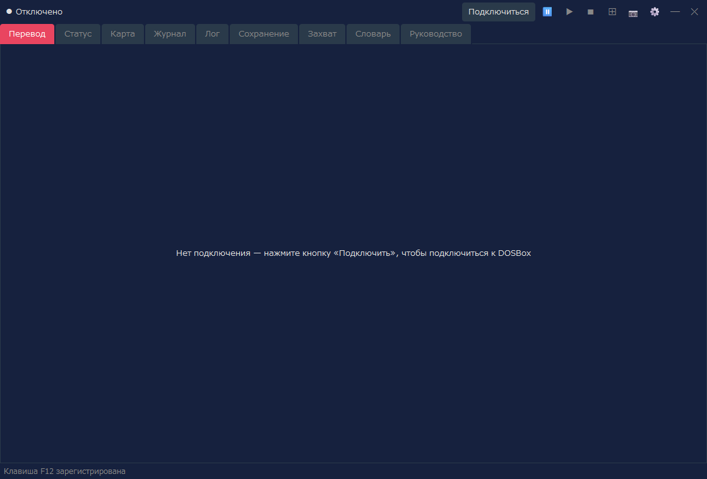
| Область | Описание |
|---|---|
| Состояние подключения | Показывает, что подключения нет, либо имя текущего экрана, имя IMG и т. п. |
| Подключиться / Отключиться | Подключает Assist к Arena в DOSBox или разрывает подключение. |
⏸ / ▶ / ■ | Приостановить / продолжить / остановить чтение вслух. Чтение вслух доступно после включения на вкладке «Чтение вслух» окна настроек (по умолчанию ВЫКЛ). |
⊞ | Включает и выключает режим расположения. Правый щелчок открывает меню расположения. |
📷 | Сохраняет снимок экрана. В режиме расположения всё расположение сохраняется одним изображением. Пока фокус у игры (DOSBox), так же можно сохранять горячей клавишей (по умолчанию F12). |
⚙ | Открывает окно настроек. |
Сообщение «Клавиша F12 зарегистрирована» в строке состояния сразу после запуска означает, что горячая клавиша снимка готова к работе. Клавишу можно изменить на вкладке «Общие» окна настроек.
После подключения у левого края панели подключения показывается имя распознанного экрана. В примере ниже Assist подключён к титульному экрану Arena.
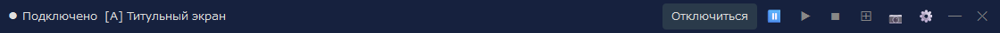
Справа от имени экрана показывается также имя IMG, которое использует этот экран (на экранах без IMG, например на титульном, его нет). На вкладке «Отображение» окна настроек можно выбрать, что показывать: имя экрана или имя IMG.
Assist рассчитан в первую очередь на работу в режиме расположения. Вкладки можно использовать и в обычном окне, но в режиме расположения игровой экран, перевод, карту, лог и другое можно закрепить на одном экране.
В расположении по умолчанию слева находится игровой экран DOSBox, справа — основные вкладки Assist, внизу — вспомогательные панели. Во время игры можно смотреть карту или журнал справа, а перевод текущего экрана — внизу или на вкладке «Перевод».
| Действие | Описание |
|---|---|
Левый щелчок по ⊞ | Включает и выключает режим расположения. |
Правый щелчок по ⊞ | Позволяет выбрать форму расположения, угол, режим слежения, повторное расположение окон, показ поверх других окон и т. д. |
📷 | В режиме расположения сохраняет всё расположение, включая DOSBox и Assist, одним изображением. |
Отключиться | Разрывает подключение к Arena. Удобнее сначала выйти из режима расположения, а затем отключиться: так проще привести окна в порядок. |
Снимки экрана вкладок нужны, чтобы показать их устройство. При подключении содержимое обновляется в зависимости от текущего экрана Arena и состояния игры.
Главная вкладка: показывает перевод, соответствующий текущему экрану. Содержимое меняется в зависимости от ситуации: титульный экран, создание персонажа, разговоры, заведения, предметы, заклинания и т. д.

| Что показывается | Описание |
|---|---|
| Перевод | Показывает перевод текущего экрана или события на язык отображения. |
| Оригинал | В зависимости от настроек показывает и соответствующий английский оригинал. |
| Специальное отображение | Списки классов и рас, снаряжение, списки заведений, списки покупок и т. п. показываются в специальном, более удобном виде. |
На вкладке «Сведения о бое» окна настроек можно показывать информацию о бое и на вкладке «Перевод». Выберите «Бой и обычный вид» или «Полный экран боя», а затем формат: текст или шкалы врагов. По умолчанию показ выключен, и вкладка «Перевод» выглядит как раньше.
Вкладка для просмотра характеристик и состояния персонажа. Сведения о статусе показываются после создания персонажа или при подключении во время игры.
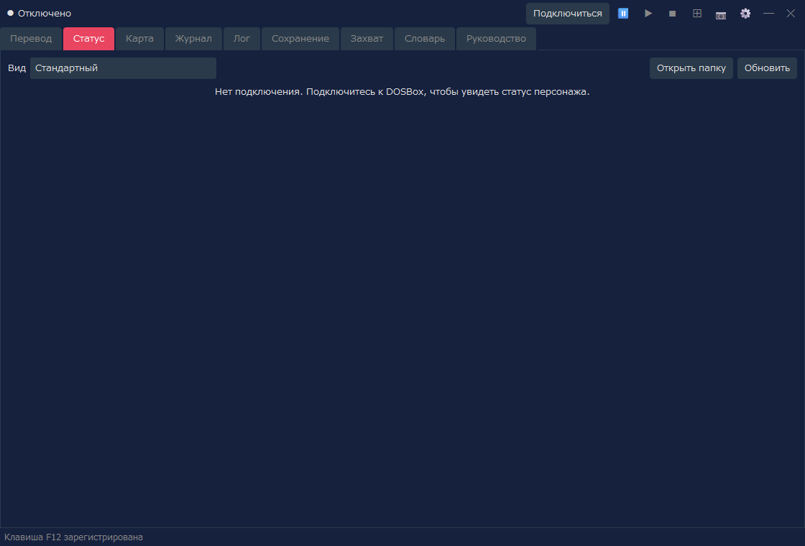
| Что показывается | Описание |
|---|---|
| Вид | Выбирает «Стандартный» (отображение, которое использовалось до сих пор) или один из дизайнов (лист персонажа). Выбранный здесь вид используется и для экрана статуса и распределения характеристик на вкладке «Перевод». |
| Характеристики | Основные характеристики: Сила, Интеллект и другие. |
| Значения состояния | Здоровье, усталость, очки заклинаний и т. д. |
| Операции изменения | Изменение характеристик и подобные операции доступны, только если читы явно включены (вид «Стандартный»). |
Эта функция показывает статус в выбранном вами дизайне. Если в поле «Вид» выбрать не «Стандартный», статус показывается в выбранном дизайне. Дизайн — это файл HTML (шаблон); прилагаемых дизайнов 8, и можно сделать свой. Есть дизайны, показывающие лицо и изображение в полный рост (с учётом снаряжения), состояние персонажа (болезнь, яд, паралич и т. д.) и класс брони каждой части тела (значение, вычисленное из снаряжения; чем меньше, тем лучше защита). Лицо и изображение в полный рост создаются из файлов вашей Arena.
| Действие | Описание |
|---|---|
| Открыть папку | Открывает папку для ваших листов персонажа (файлов HTML): character_sheets там же, где находится RTESArenaAssist.exe. При первом открытии туда кладутся копии прилагаемых дизайнов. Положенные файлы появляются в списке «Вид» с пометкой «(папка)». |
| Обновить | Заново загружает листы персонажа из папки. Нажимайте после правки файлов. |
Список прилагаемых дизайнов, устройство листов персонажа, подставляемые значения и способ их записи см. на странице «Дизайны статуса (листы персонажа)» этого руководства.
Показывает автокарту подземелий, городов, местности и помещений. Отображение обновляется в соответствии с текущим положением в игре.
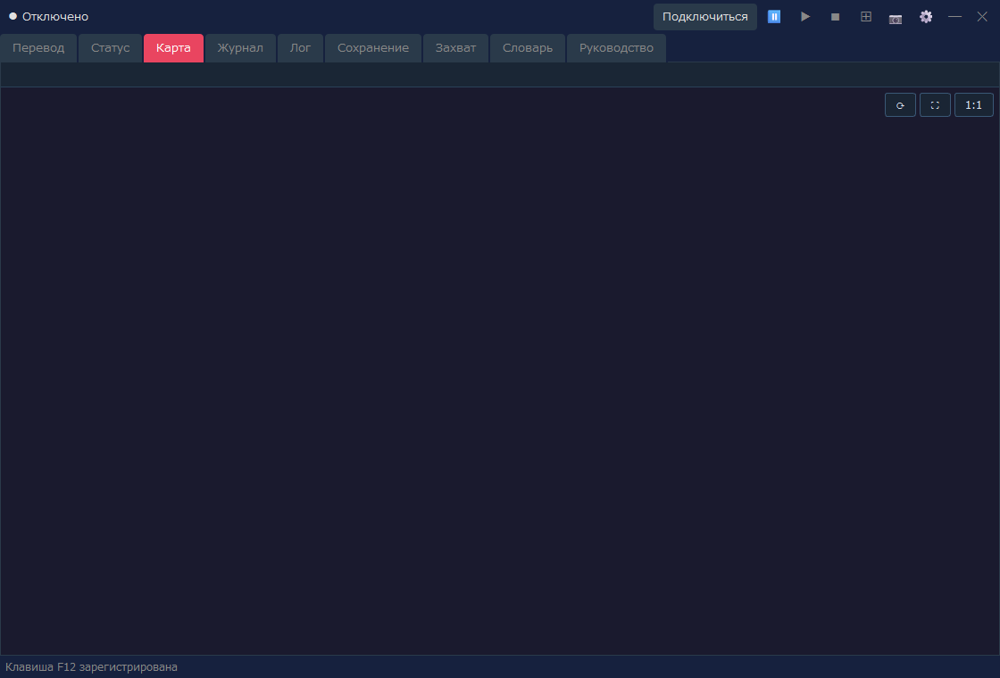
| Что показывается | Описание |
|---|---|
| Текущее положение | По состоянию подключённой игры показывает текущую карту и положение. |
| Автокарта | Рисует исследованные области, стены, входы, рельеф местности и т. п. |
| Параметры отображения | Сетку, координаты чанков, расширенное отображение местности и другое можно настроить в окне настроек. |
Вкладка для чтения на языке отображения записей, внесённых в игровой Logbook / Journal.
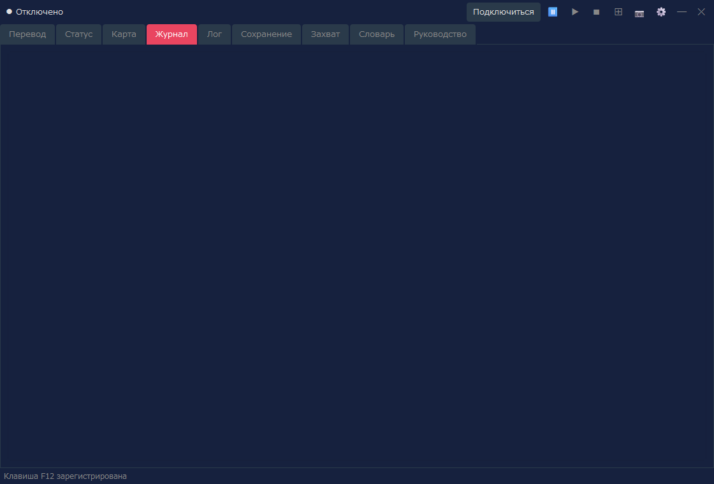
| Что показывается | Описание |
|---|---|
| Дата и заголовок | Показывает дату и краткое содержание записей журнала. |
| Текст | Показывает текст Logbook на языке отображения. |
| Обновление | Когда журнал в игре обновляется, обновляется и отображение в Assist. |
Вкладка с историей переводов, показанных Assist. Удобна, чтобы перечитать пропущенный текст.
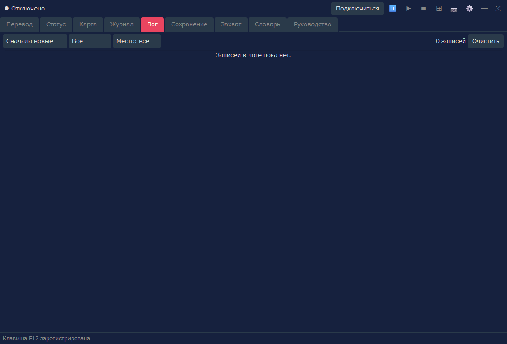
| Действие | Описание |
|---|---|
| Порядок | Переключает между порядками «Сначала новые» и «Сначала старые». |
| Фильтр | Отбирает записи лога по виду и месту. |
| Очистить | Стирает показанные записи лога. |
Если включено сохранение журнала боя и записи есть, на вкладке «Лог» можно переключаться между «Обычный журнал» и «Журнал боя». Если журнала боя нет, показывается только обычный журнал, как и раньше.
Вкладка для управления слотами сохранений Arena и резервными копиями. Помогает в работе с данными сохранений, например делает автоматическую резервную копию перед восстановлением.
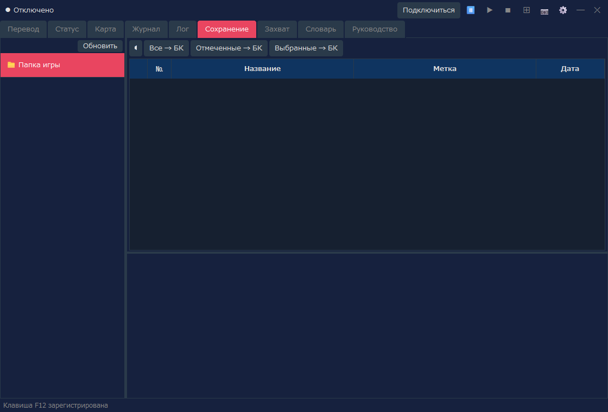
| Действие | Описание |
|---|---|
| Список слотов | Показывает список слотов сохранений Arena. |
| Резервная копия | Создаёт резервную копию выбранного сохранения. |
| Восстановить | Возвращает данные сохранения из резервной копии. |
| Удалить | Удаляет ненужные резервные копии и сохранения. |
Вкладка для просмотра снимков экрана, сохранённых кнопкой 📷. Отсюда можно открыть и снимки, сделанные в режиме расположения.
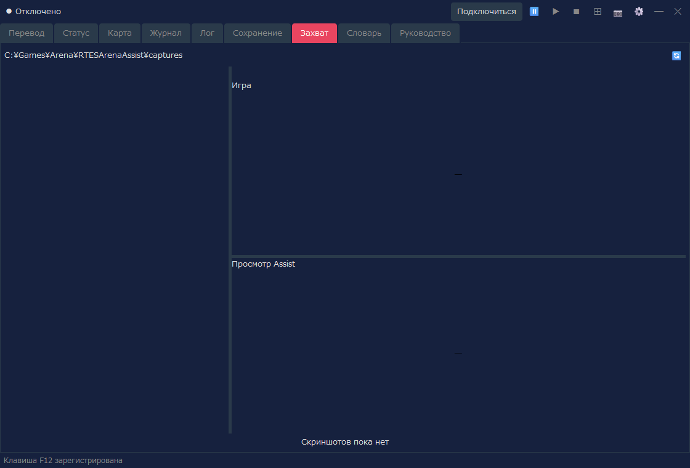
| Действие | Описание |
|---|---|
| Список | Показывает сохранённые снимки. |
| Просмотр | Показывает выбранное изображение. |
| Блокировка | Защищает нужное изображение от удаления. |
| Удаление | Удаляет выбранное или ненужное изображение. |
Вкладка для поиска по переводному словарю Assist и по тексту подземелий. Пригодится, чтобы уточнить слово или фразу, встретившиеся в игре.
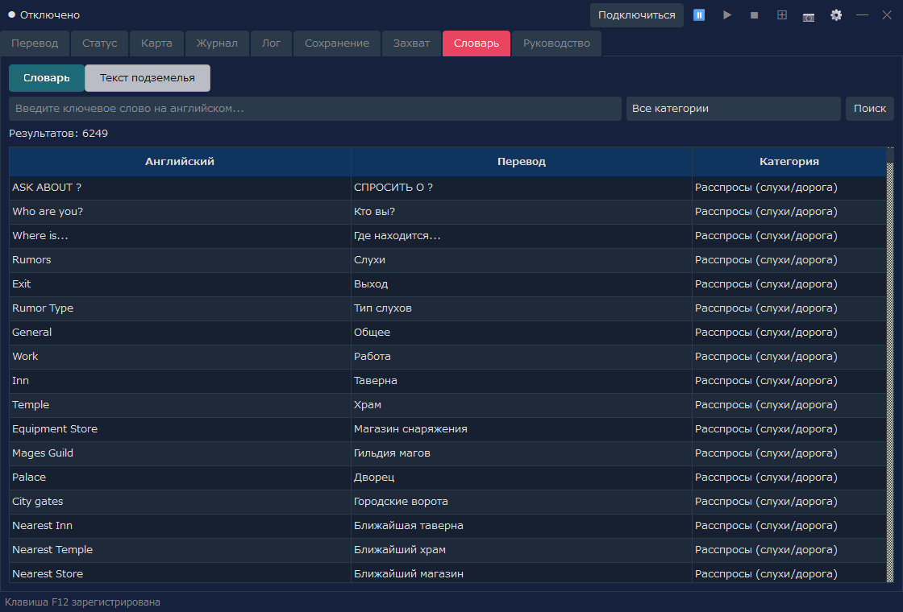
| Режим отображения | Описание |
|---|---|
| Словарь | Поиск по английскому ключевому слову, переводу и категории. |
| Текст подземелья | Поиск и просмотр текстов подземелий, полученных из INF. |
Вкладка, где на языке отображения можно прочитать описание основных действий и систем Arena, а также описание функций Assist. Используйте её, когда во время игры нужно уточнить управление или термин.
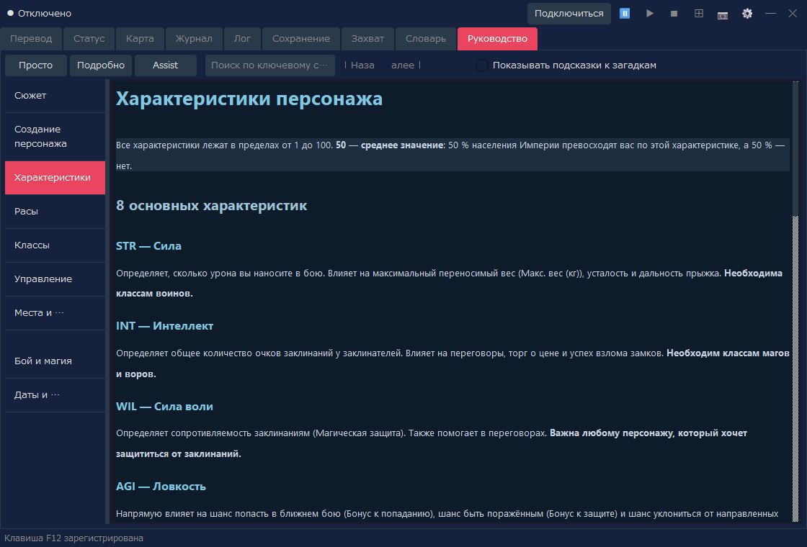
| Действие | Описание |
|---|---|
| Просто / Подробно / Assist | Переключает показываемое содержимое (см. таблицу ниже). |
| Поиск по ключевому слову | Ищет по руководству. |
| Список слева | Переключает главы: сюжет, создание персонажа, управление, бой и т. д. |
| Переключатель | Содержимое | Языки |
|---|---|---|
| Просто | Описание игры (9 глав) | 7 языков |
| Подробно | Перевод официального руководства (отображается после импорта пакета перевода) | Сейчас только японский |
| Assist | Описание функций Assist («Основы работы», «Настройки», «Дизайны статуса (листы персонажа)») | 7 языков |
Подробная версия (перевод официального руководства)
В режиме «Подробно» можно читать перевод официального руководства (Player's Guide и дополнения). Перевод распространяется отдельно от самой программы, на странице загрузки руководства, в виде пакета перевода для каждого языка отображения (RTESArenaAssist-manual-<язык>.zip); сейчас — только на японском. При первом использовании импортируйте его так:
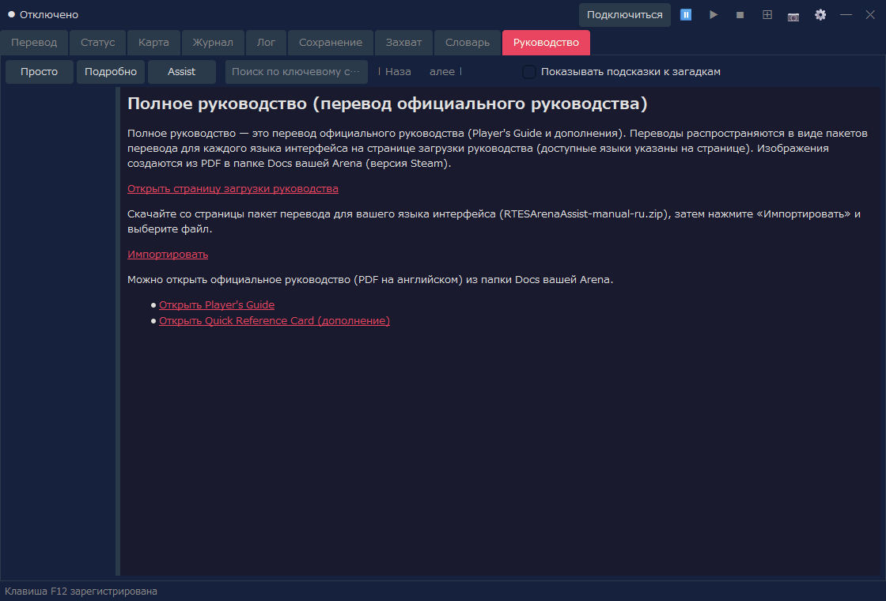
Изображения руководства создаются из файла Player Guide.pdf в папке Docs вашей Arena (версия Steam). Если PDF не найден или версия другая, показывается только текст. Проверьте «Папку игры» в настройках и нажмите «Создать изображения заново», и изображения тоже появятся. После импорта скачанный файл можно удалить. Сам Assist не подключается к интернету (загрузка выполняется вашим браузером).
В режиме «Подробно» также есть ссылки, открывающие официальное руководство (PDF на английском) из папки Docs. Если язык отображения — английский, вместо пакета перевода показываются только эти ссылки.
Подключиться в правом верхнем углу Assist, чтобы подключиться к Arena / DOSBox.⊞, чтобы включить режим расположения.📷 или используйте горячую клавишу (по умолчанию F12).⊞ и при необходимости нажмите Отключиться.Размер отображения в режиме расположения, форму расположения, панель перевода, папку для снимков и другое можно настроить в окне настроек. Чтение перевода вслух тоже включается на вкладке «Чтение вслух» окна настроек.